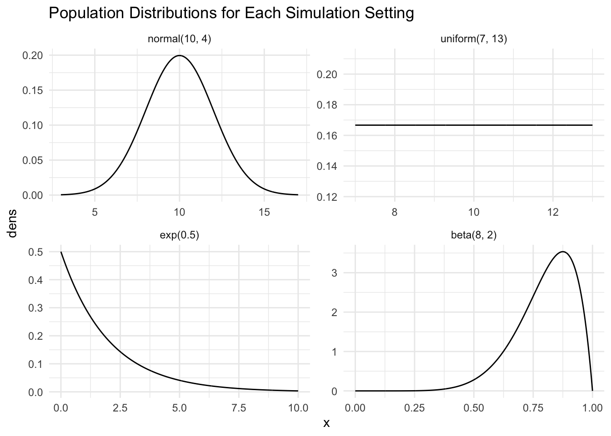
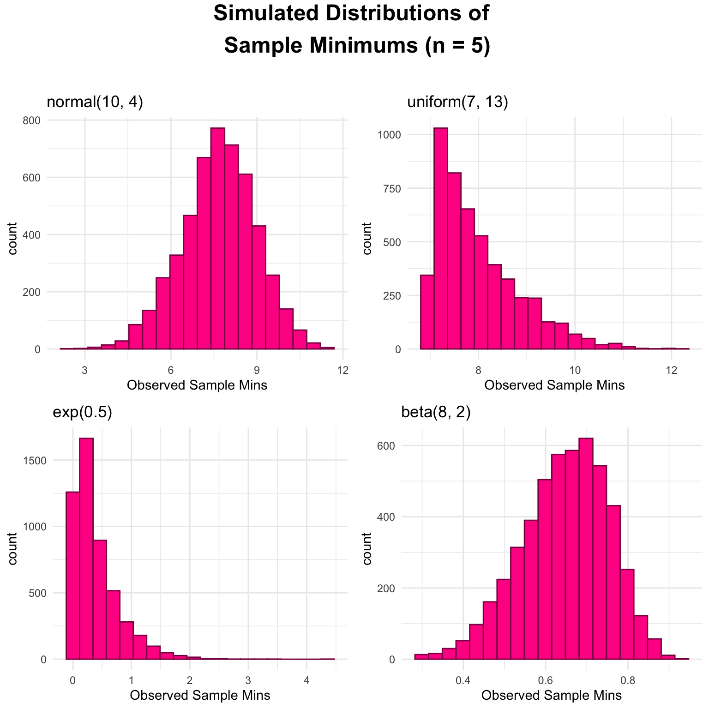
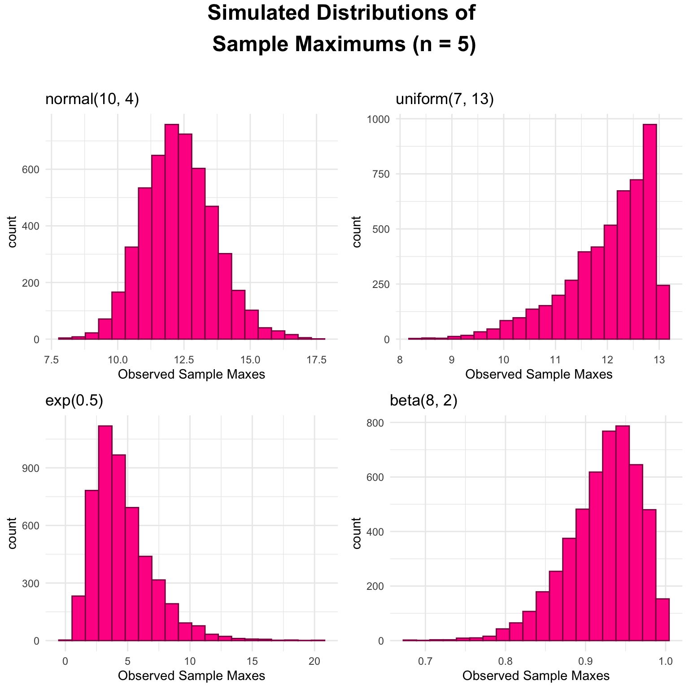
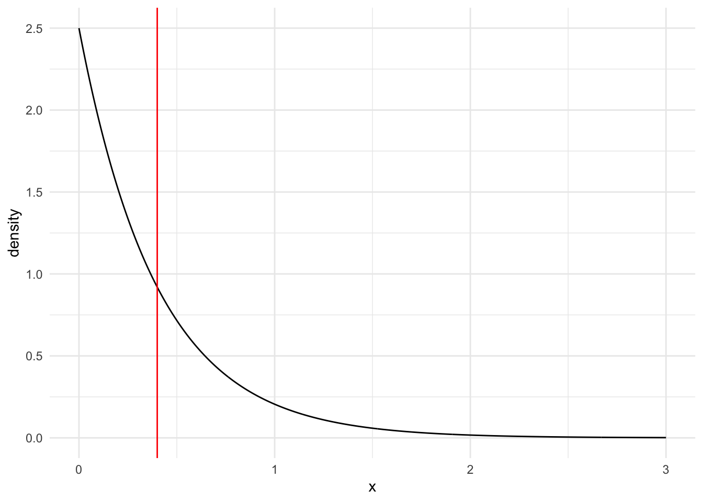
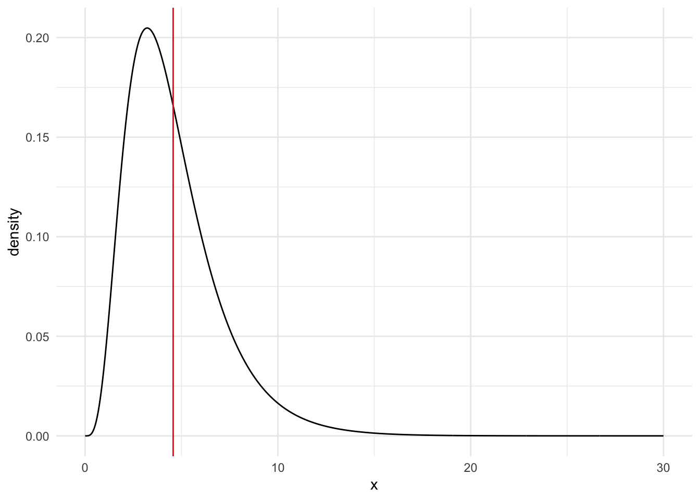

Using simulation to investigate the sampling distributions for the minimum and maximum of samples taken from different populations.
Population Distributions
Normal Distribution
\(Y \sim N(\mu = 10, \sigma^2 = 4)\)
Simulate the Distribution: Minimum \(Y_{min}\)
n <- 5 # sample size
mu <- 10 # population mean
sigma <- 2 # population standard deviation
generate_samp_min_norm <- function(mu, sigma, n) {
single_sample <- rnorm(n, mu, sigma)
sample_min <- min(single_sample)
return(sample_min)
}
nsim <- 5000 # number of simulations
## code to map through the function.
## the \(i) syntax says to just repeat the generate_samp_min function
## nsim times
mins <- map_dbl(1:nsim, \(i) generate_samp_min_norm(mu = mu, sigma = sigma, n = n))
## each number represents the sample mean from __one__ sample.
norm_mins_df <- tibble(mins)
norm_mins_plot <- ggplot(data = norm_mins_df, aes(x = mins)) +
geom_histogram(colour = "deeppink4", fill = "deeppink1", bins = 20) +
theme_minimal() +
labs(x = "Observed Sample Mins",
title = "normal(10, 4)")
norm_mins_summ <- norm_mins_df |>
summarise(mean_samp_dist = mean(mins),
var_samp_dist = var(mins),
sd_samp_dist = sd(mins))Simulate the Distribution: Maximum \(Y_{max}\)
n <- 5 # sample size
mu <- 10 # population mean
sigma <- 2 # population standard deviation
generate_samp_max_norm <- function(mu, sigma, n) {
single_sample <- rnorm(n, mu, sigma)
sample_max <- max(single_sample)
return(sample_max)
}
nsim <- 5000 # number of simulations
## code to map through the function.
## the \(i) syntax says to just repeat the generate_samp_min function
## nsim times
maxes <- map_dbl(1:nsim, \(i) generate_samp_max_norm(mu = mu, sigma = sigma, n = n))
## each number represents the sample mean from __one__ sample.
norm_maxes_df <- tibble(maxes)
norm_maxes_plot <- ggplot(data = norm_maxes_df, aes(x = maxes)) +
geom_histogram(colour = "deeppink4", fill = "deeppink1", bins = 20) +
theme_minimal() +
labs(x = "Observed Sample Maxes",
title = "normal(10, 4)")
norm_maxes_summ <- norm_maxes_df |>
summarise(mean_samp_dist = mean(maxes),
var_samp_dist = var(maxes),
sd_samp_dist = sd(maxes))Uniform Distribution
\(Y \sim Unif(\theta_{1} = 7, \theta_{2} = 13)\)
Simulate the Distribution: Minimum \(Y_{min}\)
n <- 5 # sample size
theta1 <- 7
theta2 <- 13
generate_samp_min_unif <- function(theta1, theta2, n) {
single_sample <- runif(n, theta1, theta2)
sample_min <- min(single_sample)
return(sample_min)
}
nsim <- 5000 # number of simulations
## code to map through the function.
## the \(i) syntax says to just repeat the generate_samp_min function
## nsim times
mins <- map_dbl(1:nsim, \(i) generate_samp_min_unif(theta1 = theta1, theta2 = theta2, n = n))
## each number represents the sample mean from __one__ sample.
unif_mins_df <- tibble(mins)
unif_mins_plot <- ggplot(data = unif_mins_df, aes(x = mins)) +
geom_histogram(colour = "deeppink4", fill = "deeppink1", bins = 20) +
theme_minimal() +
labs(x = "Observed Sample Mins",
title = "uniform(7, 13)")
unif_mins_summ <- unif_mins_df |>
summarise(mean_samp_dist = mean(mins),
var_samp_dist = var(mins),
sd_samp_dist = sd(mins))Simulate the Distribution: Maximum \(Y_{max}\)
n <- 5 # sample size
theta1 <- 7
theta2 <- 13
generate_samp_max_unif <- function(theta1, theta2, n) {
single_sample <- runif(n, theta1, theta2)
sample_max <- max(single_sample)
return(sample_max)
}
nsim <- 5000 # number of simulations
## code to map through the function.
## the \(i) syntax says to just repeat the generate_samp_min function
## nsim times
maxes <- map_dbl(1:nsim, \(i) generate_samp_max_unif(theta1 = theta1, theta2 = theta2, n = n))
## each number represents the sample mean from __one__ sample.
unif_maxes_df <- tibble(maxes)
unif_maxes_plot <- ggplot(data = unif_maxes_df, aes(x = maxes)) +
geom_histogram(colour = "deeppink4", fill = "deeppink1", bins = 20) +
theme_minimal() +
labs(x = "Observed Sample Maxes",
title = "uniform(7, 13)")
unif_maxes_summ <- unif_maxes_df |>
summarise(mean_samp_dist = mean(maxes),
var_samp_dist = var(maxes),
sd_samp_dist = sd(maxes))Exponential Distribution
\(Y \sim Exp(\lambda = 0.5)\)
Simulate the Distribution: Minimum \(Y_{min}\)
n <- 5 # sample size
lambda <- 0.5
mu <- 1 / lambda # population mean
sigma <- sqrt(1 / lambda ^ 2) # population standard deviation
generate_samp_min_exp <- function(lambda, n) {
single_sample <- rexp(n, lambda)
sample_min <- min(single_sample)
return(sample_min)
}
nsim <- 5000 # number of simulations
## code to map through the function.
## the \(i) syntax says to just repeat the generate_samp_min function
## nsim times
mins <- map_dbl(1:nsim, \(i) generate_samp_min_exp(lambda = lambda, n = n))
## each number represents the sample mean from __one__ sample.
exp_mins_df <- tibble(mins)
exp_mins_plot <- ggplot(data = exp_mins_df, aes(x = mins)) +
geom_histogram(colour = "deeppink4", fill = "deeppink1", bins = 20) +
theme_minimal() +
labs(x = "Observed Sample Mins",
title = "exp(0.5)")
exp_mins_summ <- exp_mins_df |>
summarise(mean_samp_dist = mean(mins),
var_samp_dist = var(mins),
sd_samp_dist = sd(mins))Simulate the Distribution: Maximum \(Y_{max}\)
n <- 5 # sample size
lambda <- 0.5
mu <- 1 / lambda # population mean
sigma <- sqrt(1 / lambda ^ 2) # population standard deviation
generate_samp_max_exp <- function(lambda, n) {
single_sample <- rexp(n, lambda)
sample_max <- max(single_sample)
return(sample_max)
}
nsim <- 5000 # number of simulations
## code to map through the function.
## the \(i) syntax says to just repeat the generate_samp_min function
## nsim times
maxes <- map_dbl(1:nsim, \(i) generate_samp_max_exp(lambda = lambda, n = n))
## each number represents the sample mean from __one__ sample.
exp_maxes_df <- tibble(maxes)
exp_maxes_plot <- ggplot(data = exp_maxes_df, aes(x = maxes)) +
geom_histogram(colour = "deeppink4", fill = "deeppink1", bins = 20) +
theme_minimal() +
labs(x = "Observed Sample Maxes",
title = "exp(0.5)")
exp_maxes_summ <- exp_maxes_df |>
summarise(mean_samp_dist = mean(maxes),
var_samp_dist = var(maxes),
sd_samp_dist = sd(maxes))Beta Distribution
\(Y \sim Beta(\alpha = 8, \beta = 2)\)
Simulate the Distribution: Minimum \(Y_{min}\)
n <- 5 # sample size
alpha <- 8
beta <- 2
generate_samp_min_beta <- function(alpha, beta, n) {
single_sample <- rbeta(n, alpha, beta)
sample_min <- min(single_sample)
return(sample_min)
}
nsim <- 5000 # number of simulations
## code to map through the function.
## the \(i) syntax says to just repeat the generate_samp_min function
## nsim times
mins <- map_dbl(1:nsim, \(i) generate_samp_min_beta(alpha = alpha, beta = beta, n = n))
## each number represents the sample mean from __one__ sample.
beta_mins_df <- tibble(mins)
beta_mins_plot <- ggplot(data = beta_mins_df, aes(x = mins)) +
geom_histogram(colour = "deeppink4", fill = "deeppink1", bins = 20) +
theme_minimal() +
labs(x = "Observed Sample Mins",
title = "beta(8, 2)")
beta_mins_summ <- beta_mins_df |>
summarise(mean_samp_dist = mean(mins),
var_samp_dist = var(mins),
sd_samp_dist = sd(mins))Simulate the Distribution: Maximum \(Y_{max}\)
n <- 5 # sample size
alpha <- 8
beta <- 2
generate_samp_max_beta <- function(alpha, beta, n) {
single_sample <- rbeta(n, alpha, beta)
sample_max <- max(single_sample)
return(sample_max)
}
nsim <- 5000 # number of simulations
## code to map through the function.
## the \(i) syntax says to just repeat the generate_samp_min function
## nsim times
maxes <- map_dbl(1:nsim, \(i) generate_samp_max_beta(alpha = alpha, beta = beta, n = n))
## each number represents the sample mean from __one__ sample.
beta_maxes_df <- tibble(maxes)
beta_maxes_plot <- ggplot(data = beta_maxes_df, aes(x = maxes)) +
geom_histogram(colour = "deeppink4", fill = "deeppink1", bins = 20) +
theme_minimal() +
labs(x = "Observed Sample Maxes",
title = "beta(8, 2)")
beta_maxes_summ <- beta_maxes_df |>
summarise(mean_samp_dist = mean(maxes),
var_samp_dist = var(maxes),
sd_samp_dist = sd(maxes))Simulated Distributions of Sample Minimums

Simulated Distributions of Sample Maximums

Results
| \(\text{N}(\mu = 10, \sigma^2 = 4)\) | \(\text{Unif}(\theta_1 = 7, \theta_2 = 13)\) | \(\text{Exp}(\lambda = 0.5)\) | \(\text{Beta}(\alpha = 8, \beta = 2)\) | |
|---|---|---|---|---|
| \(\text{E}(Y_{min})\) | 7.6721479 | 7.9906366 | 0.3948871 | 0.6468993 |
| \(\text{E}(Y_{max})\) | 12.3195106 | 12.0186568 | 4.6088644 | 0.9217724 |
| \(\text{SE}(Y_{min})\) | 1.2966635 | 0.8447587 | 0.3929804 | 0.105978 |
| \(\text{SE}(Y_{max})\) | 1.3333167 | 0.8330108 | 2.4335272 | 0.0455276 |
Discussion
Useful Situations
The normal distribution should be used when modeling data that is approximately symmetric and fairly centered around a certain value. That is, the “extreme” values are approximately equally likely to occur, while lots of values cluster around an average (ex. people’s heights). A uniform distribution should be used when all values in a certain range are equally likely to occur (ex. rolling a die). An exponential distribution should be used when modeling data that is essentially “time” between an event occurring, while the rate parameter \(\lambda\) is the average rate at which this event occurs in a given time (ex. lifetimes). Lastly, a beta distribution should be used when values fall between 0 and 1, which typically represents a percentage (ex. likelihood of 60% of people liking cilantro).
\(SE(Y_{min})\) vs \(SE(Y_{max})\)
For the normal and uniform population models, \(SE(Y_{min})\) and \(SE(Y_{max})\) are extremely close. For the exponential and beta distributions, they are very different. Based on the observed values and visual representations of the population distributions, it seems that a general rule could be that \(SE(Y_{min}) \approx SE(Y_{max})\) if the population distribution is symmetrical.
PDF for the Exponential Distribution
\(Y \sim Exp(\lambda = 0.5)\)
Minimum
\(f(y) = \lambda e^{-\lambda y}\)
\(f(y) = 0.5e^{-0.5y}\) where \(y > 0\)
Find CDF, F(y):
\(F(y) = \int_{0}^{y}0.5e^{-0.5y} dy = 1 - e^{-0.5y}\)
Use CDF and PDF for Y to find PDF for Minimum:
\(f_{min}(y_{min}) = n(1-F(y))^{n-1}f(y)\)
\(f_{min}(y_{min}) = n(1-(1 - e^{-0.5y})^{n-1}0.5e^{-0.5y}\)
\(f_{min}(y_{min}) = n(e^{-0.5y})^{n-1}0.5e^{-0.5y}\)
\(f_{min}(y_{min}) = 0.5ne^{-0.5yn}\)
if n = 5, \(f_{min}(y_{min}) = 2.5e^{-2.5y}\)
Expectation for Minimum:
\(E(Y_{min}) = \int_{0}^{\infty}y_{min}f_{min}(y_{min})dy_{min}\)
\(E(Y_{min}) = \int_{0}^{\infty}y_{min}2.5e^{-2.5y_{min}}dy_{min}\) (use Symbolab to calculate)
\(E(Y_{min}) = 0.4\)
PDF for Minimum with Expected Value

SE for Minimum:
\(E(Y_{min}^2) = \int_{0}^{\infty}y_{min}^2f_{min}(y_{min})dy_{min}\)
\(E(Y_{min}^2) = \int_{0}^{\infty}y_{min}^22.5e^{-2.5y_{min}}dy_{min}\)
\(E(Y_{min}^2) = 0.32\) (use Symbolab to calculate)
\(Var(Y_{min}) = E(Y_{min}^2) - [E(Y_{min})]^2\)
\(Var(Y_{min}) = 0.32 - 0.4^2\)
\(Var(Y_{min}) = 0.16\)
\(SE(Y_{min}) = \sqrt{0.16} = 0.40\)
Maximum
Use CDF and PDF for Y to find PDF for Maximum:
\(f_{max}(y_{max}) = n(F(y))^{n-1}f(y)\)
\(f_{max}(y_{max}) = n(1 - e^{-0.5y})^{n-1}0.5e^{-0.5y}\)
if n = 5, \(f_{max}(y_{max}) = 2.5(1 - e^{-0.5y})^{4}e^{-0.5y}\)
Expectation for Maximum:
\(E(Y_{max}) = \int_{0}^{\infty}y_{max}f_{max}(y_{max})dy_{max}\)
\(E(Y_{max}) = \int_{0}^{\infty}y_{max}2.5(1 - e^{-0.5y_{max}})^{4}e^{-0.5y_{max}}dy_{max}\) (use Symbolab to calculate)
\(E(Y_{max}) = 4.567\)
PDF for Maximum with Expected Value

SE for Maximum:
\(E(Y_{max}^2) = \int_{0}^{\infty}y_{max}^2f_{max}(y_{max})dy_{max}\)
\(E(Y_{max}^2) = \int_{0}^{\infty}y_{max}^22.5(1 - e^{-0.5y_{max}})^{4}e^{-0.5y_{max}}dy_{max}\) (use Symbolab to calculate)
\(E(Y_{max}^2) = 26.709\)
\(Var(Y_{max}) = E(Y_{max}^2) - [E(Y_{max})]^2\)
\(Var(Y_{max}) = 26.709 - 4.567^2\)
\(Var(Y_{max}) = 5.85151\)
\(SE(Y_{max}) = \sqrt{5.85151} = 2.418989\)
For both the minimum and maximum, the expected values and standard errors are very close to the results of the simulation.
| \(\text{Simulation}\) | \(\text{PDF}\) | |
|---|---|---|
| \(\text{E}(Y_{min})\) | 0.3948871 | 0.4 |
| \(\text{E}(Y_{max})\) | 4.6088644 | 4.567 |
| \(\text{SE}(Y_{min})\) | 0.3929804 | 0.4 |
| \(\text{SE}(Y_{max})\) | 2.4335272 | 2.418989 |